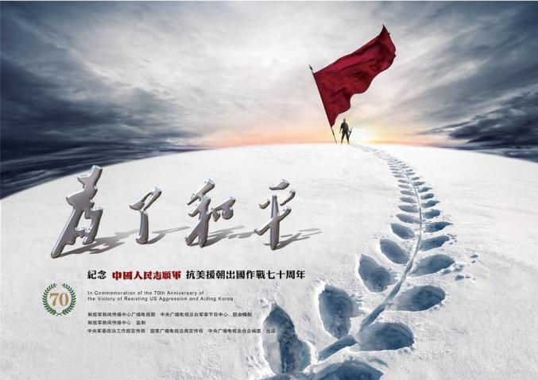

捍卫新中国


抗美援朝：战争的胜利，粉碎了美国妄图干涉朝鲜内政、并吞全朝鲜的企图；保卫了朝鲜民主主义人民共和国的独立，捍卫了新中国的安全，保障了新中国经济恢复和建设工作的顺利进行；保卫了亚洲和世界的和平，戳穿了美帝国主义纸老虎的面目，增强了中国人民的民族自尊心，鼓舞了世界人民保卫世界和平反对侵略的意志和决心；打出了中国的国威和军威，提高了新中国的国际地位，加速了人民军队的建设。弘扬伟大抗美援朝精神，雄赳赳、气昂昂，向着第二个百年奋斗目标，向着实现中华民族伟大复兴的中国梦，继续奋勇前进!